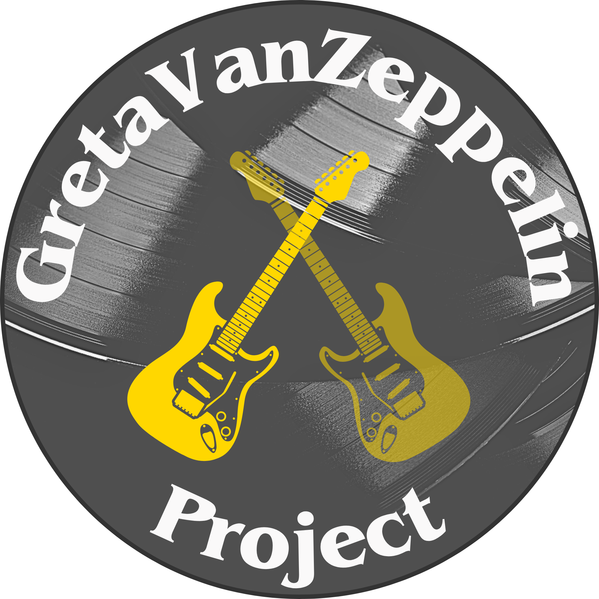

Balisage Paper: Is Invisible XML Ready for College Students?
Trying iXML and XProc on a Music Analysis Project in an Undergraduate Text Analysis Course
Context: The Large-Scale Text Analysis Course at Penn State Behrend
The Large-Scale Text Analysis class (Digit 210) is taught (by me, Elisa
Beshero-Bondar) in spring semesters in the Digital Media, Arts, and Technology major
at
Penn State Behrend (affectionately known to us as the DIGIT
program). The
course is part of a multiple-semester digital humanities core sequence that concentrates
on text encoding and processing. Students usually came to this class with previous
experience from a course taught regularly each fall in text encoding with XML,
transformation with XSLT, and web development with HTML and CSS. Our university
semesters are 15 weeks long with three 50-minute classes per week, during which these
classes involve daily homework and a few tests with an emphasis on students’ applying
what they learn to develop semester projects in small teams.
Digit 210 is usually understood to be the Regex-and-Python course
. A
typical semester would involve orienting students to natural language processing in
Python and preparing text corpora for analysis. In this context, XML was a helpful
(but
not completely necessary) option that contributed to more precise text curation and
analysis, and the expectation to prepare XML provided a good means for students to
learn
regular expression search-and-replace operations in order to generate simply but
meaningfully structured XML from regular patterns in text corpora. Students would
then
learn to write XQuery to output portions of the texts to analyze using natural language
processing libraries (spaCy
or NLTK). For an exemplary semester
project, a team of students scraped
collections of popular game script
files. On performing careful document analysis, they applied regular expression
search-and-replace operations to create a simple XML structure that helped them to
isolate (and mark off) spoken conversation between NPC characters from passages about
game items and optional actions. The team prepared XML and wrote XQuery to output
the
texts that described decision making forks, in order to find out how frequently certain
characters and items are mentioned at specific locations in the game. In other projects,
students developed text corpora from many seasons of available TV series like
The Simpsons. They prepared simple XML to identify dialogue,
speakers, and non-spoken descriptive passages, then applied XQuery to separate out
just
the portions of the texts they wished to analyze (just the spoken text) in plain-text
inputs to provide to Python. In previous semesters, we would have student teams import
the Saxon-C package into their Python scripts to have students apply XPath and XQuery
directly as a pipeline process within their Python. Thus, Python has traditionally
come
first in this course and dominated the class experience of developing a pipeline
algorithm for analyzing text corpora.
Perhaps the 2020s are a decade inviting us to resist complacency, particularly in
the
organizing of teaching syllabi. In Spring 2025, motivated greatly by the interesting
opportunities of invisible XML and the creative affordances of SVG discussed in previous
years at Balisage, we changed direction and put XML technologies much more in the
foreground.[1] This year, our students began the course by learning to write SVG and think
about creative ways to visualize data by programmatically scripting SVG with XSLT.
The
SVG data visualization unit previously came at the end of the Python-dominated course,
as a consequence of preparing the XML and writing XQuery: students were prepared to
script SVG with XQuery with an emphasis on extracting data and providing an alternative
to visualization libraries available in the Python ecosystem. In the new experimental
course, we decided to begin with hand-encoding SVG as a rewarding
starting point for our digital creative students, and then review what they had learned
of XSLT in their Text Encoding course by this time pulling data from texts they had
encoded in order to make their own data visualizations. This moved XSLT front and
center
in this year’s course, though also caused us not to cover XQuery,
given the time we would now have to give to new processing technologies. We then covered
the regular expressions unit much as usual with the same goals of preparing XML files
from so-called plain text
using search-and-replace operations in the
oXygen XML Editor. However, this time we found opportunity to
return again to XSLT to introduce stages of conversion from text to XML using
xsl:analyze-string to refine their processing and create new element
nodes based on regular expression matches and non-matches. This set the stage for
the
new unit on invisible XML and XProc.
All this activity concentrated on XML processing before the students wrote any Python. The new priority on XML not only helped students review and develop XSLT skills introduced in the previous semester, but it also gave students an unusual experience with writing grammars and seeing the relationships and differences between regular expression matching, grammars, and schemas. Putting these XML, XSLT, and iXML experiences first, before introducing Python for natural language processing, changed the course experience significantly. Even though not all students applied iXML or XProc pipelines in their semester projects, the common experience of encountering these technologies certainly changed the way students encountered pipeline processing, improved their command line fluency. and introduced them to software development in alpha stages. Was invisible XML ready for experimentation by undergraduates, and was the experience worth deferring their attention to Python processing?
This semester, everything was new and different, and here we break down the most challenging and learning-intensive experiences for students confronting invisible XML and XProc for the first time.
Introducing the Battle-Testing Team
Preparing for a Cross-Platform Educational Experiment
Hello world! I’m Michael Simons, and I was one of the
battle-testers
for the new iXML and XProc unit in our Digit 210
class. I was one of three students who signed up to assist Dr. Beshero-Bondar and
Dr. David J. Birnbaum in trying out some new exciting XML technologies to be taught
to the rest of our class. Dr. Birnbaum was invited to teach a roughly one week long
unit on these technologies, but the preparation was long and intense. I was joined
by Dannika, who was taking the course with me, and Caleb, who had taken the course
the previous year in its previous form. Dannika is a student who has attention to
detail and great leadership qualities but likely would have not gained as much from
iXML and XProc if she had not been a behind-the-scenes battle-tester. Caleb is also
a highly motivated student and leader, and one of his main contributions was working
through the challenges of installing iXML and XProc processors in a Windows
environment, as Dr. Beshero-Bondar, Dannika and myself are all MacOS users.
Our group of battle-testers was largely responsible for, most importantly, getting ahead of the class and working our way through learning iXML and XProc before our peers, so that we could
-
Write instructions for installation and configuration that we felt our peers would be able to easily follow
-
Assist our peers when problems arose.
We hope that our battle-testing was helpful to the developers of iXML and XProc as
we figured out what documentation was needed to provide these technologies to a
group of undergraduates. While Dr. Birnbaum developed installation instructions, he
warned us that they were only for MacOS and for those with a purchased Saxon EE
license for use with XProc processing.[2] Knowing that our students would not be able to purchase a Saxon EE
license and would be using the HE (Home Edition) instead, this was one difference
that the battle-testing team needed to work on incorporating into our instructions.
As the number of differences between Dr. Birnbaum’s instructions and our experiences
grew rapidly, including the many differences between MacOS and Windows as discovered
by Caleb and Dr. Beshero-Bondar, we realized we would need separate sets of
instructions for each platform as well.[3] Our instructions also taught the students many things that would be
useful to them in general as DIGIT majors, including how to install a package
manager (Homebrew for MacOS or Chocolatey for Windows) for the
purpose of installing OpenJDK,[4] creating shell aliases and editing system dot-files,[5] and smoke-testing
their installations to ensure proper
configuration.
We are grateful for Dr. Birnbaum joining us over Zoom for consultation sessions as we worked on this battle-testing phase, and we learned a lot from his whimsical sidenotes and extraordinary yet accessible knowledge. While individual members of the class might have been able to successfully prepare their environments, without our work ahead of time, things would have likely been very chaotic when Dr. Birnbaum arrived to guest-instruct our class. Additionally, this was a condensed experiement, as Dr. Birnbaum was allotted just three, 50 minute class periods for teaching us both iXML and XProc. So, ensuring all students were ready to hit the ground running at the time of his guest appearance was crucial. He created a thorough lesson plan outlining this fast-tracked learning experience.[6] His lesson plan shared very important introductory readings by Norm Tovey-Walsh and Martin Kraetke, serving as an orientation to iXML and XProc respectively.[7] He also introduced us to John Lumley’s iXML workbench as a helpful resource to practice using iXML.[8]
Invisible XML and the Music Analysis Project
What we hoped initially was that students would be inspired to try out these technologies on their own projects. And some students did, but we learned some unexpected things about their potential application, especially to the field of music encoding.
A Project on Chord Chart Analysis: What iXML Looks Like in a Large-Scale Student Project
The Optimally Motivated Student Experience
Michael again! Dr. Beshero-Bondar deemed me an optimally motivated
student
because I did the work (relatively on time) and was able to
grasp iXML and XProc enough to take it further than what most other students
attempted to do. The big question for me was: Are these technologies worth
incorporating into my group’s semester project?
The short-term answer, unfortunately, was no
, because I held up my
team working on something that I actually completed with regular expressions
search-and-replace operations in less than a quarter of the time I spent on iXML.
However, the big picture answer may in fact be yes
, because here I
am, reflecting on my learning experience in a professional setting which is a great
honor. I’m walking away from the semester with a larger perspective on the potential
of iXML and a greater hopefulness for completing and expanding the project.
Introducing the GretaVanZeppelin Project

GretaVanZeppelin Project Logo
The GretaVanZeppelin Project is an analysis of musical artists, Greta Van Fleet and Led Zeppelin, using collections of chord charts encoded in XML and analyzed with various Python tools. While the project is still in what could be considered its early stages, there were many valuable discoveries and triumphs made along the way, as well as a strong setup for future research possibilities. One of the discoveries was finding more efficient ways to encode and analyze chord charts. The main triumph was being able to implement iXML and XProc on a fairly large scale.
The project goal for my team was to analyze the chord charts of two artists and determine if there were any meaningful comparisons between them, musically or lyrically. Spoiler alert: our findings were inconclusive! The data we extracted from the documents resulted in some nice data visualizations, but unfortunately, we didn’t take it far enough to draw any of those conclusions between the two chosen artists. So, for me, the main takeaway from this project was, unexpectedly, the process in which we obtained the data, including of course, iXML and an XProc pipeline.
The future of the project was made aware to us (the project developers) during
its showcase at our Digit program’s end-of-the-semester presentation day called
DIGIT Works
. We received valuable feedback from peers and
industry professionals about incorporating additional data into the project to
achieve a more thorough comparison, specifically, being able to analyze the
artists’ influences and genre blending, and using our analysis processes to
study more than just two artists.
My main task for this project was the transformation of the raw text into something the rest of the team could process with various Python tools and display on our website. This became my task largely because of my role as a battle-tester of the new markup tools. Conversely, my battle-tester status motivated me further to include iXML and XProc in our project because I felt a strong desire to implement what I had learned.
Before discussing my specific processes and work, I feel it is important to share a brief overview of our preliminary research into music encoding, as well as what further research revealed after the conclusion of the semester project.
A Brief Background on Music Encoding
As well as some things we wished we knew when we started the project
None of us knew where to begin in the markup stages, so Dr. Beshero-Bondar
suggested that our team research the Music Encoding Initiative
(MEI). We discovered that the MEI is a community-driven,
open-source effort to define a system for encoding musical documents in a
machine-readable structure,
[9] but we possibly should have kept looking for other options for
encoding chord charts at that time. In our research, we only saw examples of
encoded sheet music in which all the notes are represented on the page on
musical staffs. Sheet music is not conducive to rock music which, in my
experience, is based on repeated grooves and phrases that are more effectively
communicated verbally/audibly. A chord chart serves as a sufficient guide to
show an outline of the structure of the song while displaying what chords need
to be played based on what lyrics are being sung. This means there is a lot of
implicit information about the song purposefully unmarked in these chord charts,
but what we were seeing of the MEI was that it was very much focused on
explicitly encoding every note of a piece of music. That, combined with the
limited amount of time we had for the project, steered us away from utilizing
the MEI guidelines and schema in our project.
Our Digit program has one past experience using the MEI: the Locke Anthology Project[10]. This project conformed to MEI and TEI guidelines to preserve a digital version of the poetry and music in Alain Locke’s anthology The New Negro: An Interpretation (1925). The work includes short snippets of music between its stories and poems, and the team used the MEI’s structure to encode those snippets so that they could be converted to MIDI[11] and played back as audio files on the website. This use of the MEI was practical, not analytical like the GretaVanZeppelin Project’s focus was. So, while very interesting, the Locke Anthology Project was not something we could have used to help us with our project.
So, how do we approach a project that utilizes solely chord notation? There are other formats for the digitization of music, most notably MusicXML which we discovered after the semester’s conclusion. This markup language is used and supported in many popular music notation, recording, and other music-related software.[12] Upon familiarizing myself with their tutorial[13], I think we could have utilized it, but it would have still been a very large and time-consuming learning curve.
We only discovered ChordPro after the project’s development. I actually knew about ChordPro existing as a way to write chord charts, but only in the context of my church’s music planning software[14]. I was unaware of the scope of ChordPro as an in-development open-source program[15] aimed at the markup of chord charts. This could very well be the future of the GretaVanZeppelin project and could also more deeply incorporate iXML, but I’ll discuss that after I’ve explained what the project already accomplished. (It sure would have been nice to know about ChordPro back in February 2025!)
All of this to say, we ultimately decided to make our own markup specifically for our analysis.
Document Analysis and Our Unique Markup
My implementation of raw text transformation began by sketching out what the process would look like as a pipeline. After some basic XML structure, I knew that I would first need to find the two blank lines that separated the beginnings and endings of each section (Verse, Chorus, etc.) in the song files. Then, I would need to separate chords from lyrics within those sections. Finally, some additional processing would be needed to identify individual chords for counting purposes and to extract either just the chords or just the lyrics for analysis.
The source of our files was Ultimate Guitar. It’s a community resource, so the proofreading process is uncertain. It became apparent that lines were not separated logically as they would be if I or a professional made the chord charts. Instead of the lines being divided by musical phrases/chord progressions, they seemed to be divided by simply what looked the best on the page. This limited our ability to analyze actual chord progressions, so instead we focused on chord usage per song/artist.
An example of this inconsistent formatting is shown below in an exerpt from
Greta Van Fleet’s song Flower Power
. Each chord is one measure long, so a
logical way of dividing the lines of lyrics and chords would be to have each
line correspond with one measure. But, the original formatting confusingly makes
it seem more complex than that.
Figure 1: Original Sample
[Chorus]
A
Turn tonight, firelight
D
Star shines in her eye
A D
Makes me feel like I’m alive
A
She’s outta sight, yeah
D
Aw yeah
A D
She’s alright, she’s alright, she’s alright
F G
She’s outta sight, outta sight
Figure 2: Ideally Edited Sample (for the purpose of this example)
[Chorus]
A
Turn tonight, firelight
D
Star shines in her eye
A
Makes me feel like
D
I’m alive, she’s outta sight
A
Yeah
D
Aw yeah
A
She’s al - right, she’s alright
D
She’s al - right, she’s outta sight
F G
Outta sight
One more important note about the raw text: the chords are placed directly over the word, or syllable of the word (e.g. al - right), that is being sung when that chord is played. In the above example, the chords were placed properly above the words; the easiest way for me to check this is to listen to the song and pay attention to when the chord changes. In some of the chord charts, I noticed that less care was taken to preserve the placement of the chords. For this reason, as well as the sometimes confusing line divisions, I made the decision that we would not make the effort to preserve the chords’ placement with the lyrics. We later discovered a way to accomplish this (see section below on ChordPro), but I personally can’t see the benefits of it in this project other than beautifully and accurately displaying the final XML output. The objective of the project wasn’t to improve the displaying of the chord charts but rather to analyze them.
There is, however, something to be said for noting the duration of the chords
in the markup. My preliminary research into the MEI showed that they use an
attribute @dur in their <chord> elements to
indicate the musical duration of the chord. This would allow for chord
progressions to be analyzed more completely by our Python analysis tools without
having to preserve the spacing between the chords and make the technology
understand that each line is, say, one bar. This, however, was not within the
scope of this project, because unless there is an AI tool that can accurately
listen to music and recognize chord changes, the durations of the chords would
have to be marked by hand for every chord in every song.
All of this begs the question: Is chord notation declaring itself to be
markup in its own right?
What is an easier form of music for a lot
of musicians to read is not as easy for a computer to understand because of the
implicit information that is purposely not marked in chord charts. Is it worth
encoding chord charts more deliberately to support research and analysis? MEI
preserves music well in academia; MusicXML outputs MIDI to be played as music;
and ChordPro allows humans to write chord charts and accurately place the chords
with the words to support performers. Can chord charts allow for a deeper
analysis and comparison of music? Our experience with iXML suggests there is
hope for this work!
Implementation and Reflection on iXML in the Project
As previously mentioned, this project began with the MEI in mind; the iXML reflects that. Below is an example of a song (as we saw it in oXygen Editor with visible space and newline characters), the full iXML grammar, and XML output after processing the song with the iXML grammar:
Figure 3: Raw Text Chord Chart for Greta Van Fleet’s Flower
Power
Flower·Power↵ From·the·Fires↵ Greta·Van·Fleet↵ A↵ ↵ [Intro]↵ A·D·A·D·A·D·A·D↵ ·↵ ·↵ [Verse·1]↵ A····················D↵ ·She·is·a·lady,·comes·from·all·around↵ A····························D↵ ·She's·many·places,·but·she's·homeward·bound↵ ············A↵ And·now·she·walks·kinda·funny↵ I·think·she·knows↵ D↵ Day·by·day·by·day↵ Our·love·grows↵ A···················D↵ ·She's·a·lantern·in·the·night↵ She's·outta·sight↵ ·↵ ·↵ [Pre-Chorus]↵ A·······················D↵ ·Ma·ma·ma·ma·ma·ma·ma·ma·ma·ma·ma·ma↵ A·······························D↵ Ma·ma·ma·ma·ma·ma·ma·ma·ma·ma·ma·ma↵ Ma·ma↵ Hey↵ ·↵ ·↵ [Chorus]↵ A↵ Turn·tonight,·firelight↵ D↵ Star·shines·in·her·eye↵ A···················D↵ ·Makes·me·feel·like·I'm·alive↵ ···················A↵ She's·outta·sight,·yeah↵ D↵ Aw·yeah↵ ········A·····························D↵ She's·alright,·she's·alright,·she's·alright↵ ·························F····G↵ She's·outta·sight,·outta·sight↵ ·↵ ·↵ [Bridge]↵ A·D·A·D↵ ·↵ ·↵ [Verse·2]↵ A···························D↵ ·Electric·gold·our·love·with·tender·care↵ A·····················D↵ ·Hills·of·satin·grass·and·maidens·fair↵ ········A↵ Now·she·rides·through·the·night↵ On·a·silver·storm↵ D↵ Sword·in·hand↵ Our·fate's·torn↵ A···················D↵ ·She's·a·sparrow·of·the·dawn↵ Our·love·is·born↵ ·↵ ·↵ [Pre-Chorus]↵ A·······················D↵ ·Ma·ma·ma·ma·ma·ma·ma·ma·ma·ma·ma·ma↵ A·······························D↵ Ma·ma·ma·ma·ma·ma·ma·ma·ma·ma·ma·ma↵ Ma·ma↵ Hey↵ ·↵ ·↵ [Chorus]↵ A↵ Turn·tonight,·firelight↵ D↵ Star·shines·in·her·eye↵ A···················D↵ ·Makes·me·feel·like·I'm·alive↵ ···················A↵ She's·outta·sight,·yeah↵ D↵ Aw·yeah↵ ········A·····························D↵ She's·alright,·she's·alright,·she's·alright↵ ·························F····G↵ She's·outta·sight,·outta·sight↵ ·↵ ·↵ [Solo]↵ A···D↵ Yeah↵ A↵ Oh·yeah↵ D·A↵ ···Oh·yeah↵ Oh·yeah↵ ·······D·A·D·A······D↵ Oh·yeah·······papapa↵ A·D↵ ···Oh·yeah↵ ·↵ ·↵ [Verse·3]↵ A···········G···········D↵ ·As·the·days·pass·by·my·mind↵ A··············G↵ ·Are·the·wrong,·the·right↵ ·······D↵ You·are·my·sunshine↵ A················G··········D↵ ·And·as·the·night·begins·to·die↵ A··············G···················D↵ ·We·are·the·morning·birds·that·sing·against·the·sky↵ ·↵ ·↵ [Interlude]↵ A·G·D·A·G·D↵ A·G·D·A·G·D↵ A·G·D·A·G·D↵ A·G·D·A·G·D↵ A·G·D·A·G·D↵ A·G·D·A·G·D↵ A·G·D·A·G·D↵ A·G↵
Figure 4: GretaVanZeppelin Project's iXML
mei: music. music: title, newline, album, newline, artist, newline, key, newline, newline*, section++newline. title: ~[#d;#a]+. album: ~[#d;#a]+. artist: ~[#d;#a]+. key: ~[#d;#a]+. section: type, mdiv. @type: -"[", ~[#22]+, -"]". mdiv: ~[#22]+. -newline: (#d?, #a). -space: " ".
Figure 5: iXML Output File for Flower Power
<?xml version="1.0" encoding="UTF-8"?><mei ixml:state="ambiguous" xmlns:ixml="http://invisiblexml.org/NS"><music><title>Flower Power</title>
<album>From the Fires</album>
<artist>Greta Van Fleet</artist>
<key>A</key>
<section type="Intro"><mdiv>
A D A D A D A D
</mdiv></section>
<section type="Verse 1"><mdiv>
A D
She is a lady, comes from all around
A D
She's many places, but she's homeward bound
A
And now she walks kinda funny
I think she knows
D
Day by day by day
Our love grows
A D
She's a lantern in the night
She's outta sight
</mdiv></section>
<section type="Pre-Chorus"><mdiv>
A D
Ma ma ma ma ma ma ma ma ma ma ma ma
A D
Ma ma ma ma ma ma ma ma ma ma ma ma
Ma ma
Hey
</mdiv></section>
<section type="Chorus"><mdiv>
A
Turn tonight, firelight
D
Star shines in her eye
A D
Makes me feel like I'm alive
A
She's outta sight, yeah
D
Aw yeah
A D
She's alright, she's alright, she's alright
F G
She's outta sight, outta sight
</mdiv></section>
<section type="Bridge"><mdiv>
A D A D
</mdiv></section>
<section type="Verse 2"><mdiv>
A D
Electric gold our love with tender care
A D
Hills of satin grass and maidens fair
A
Now she rides through the night
On a silver storm
D
Sword in hand
Our fate's torn
A D
She's a sparrow of the dawn
Our love is born
</mdiv></section>
<section type="Pre-Chorus"><mdiv>
A D
Ma ma ma ma ma ma ma ma ma ma ma ma
A D
Ma ma ma ma ma ma ma ma ma ma ma ma
Ma ma
Hey
</mdiv></section>
<section type="Chorus"><mdiv>
A
Turn tonight, firelight
D
Star shines in her eye
A D
Makes me feel like I'm alive
A
She's outta sight, yeah
D
Aw yeah
A D
She's alright, she's alright, she's alright
F G
She's outta sight, outta sight
</mdiv></section>
<section type="Solo"><mdiv>
A D
Yeah
A
Oh yeah
D A
Oh yeah
Oh yeah
D A D A D
Oh yeah papapa
A D
Oh yeah
</mdiv></section>
<section type="Verse 3"><mdiv>
A G D
As the days pass by my mind
A G
Are the wrong, the right
D
You are my sunshine
A G D
And as the night begins to die
A G D
We are the morning birds that sing against the sky
</mdiv></section>
<section type="Interlude"><mdiv>
A G D A G D
A G D A G D
A G D A G D
A G D A G D
A G D A G D
A G D A G D
A G D A G D
A G
</mdiv></section></music></mei>
The way I hear and see the iXML in my head is, [what’s on the left side
of the colon] contains [what’s on the right side of the colon] followed by
[anything else, separated by a comma].
Beginning at the first line, the root element named <mei>
and the element following (<music>) are named as such simply
for the purpose of being adaptable to MEI guidelines in the future. Of course
now, we realize that may not be all that beneficial. All of the subsequent
elements are contained in the secondary root element <music>.
There are four lines of metadata which are there to identify the song. Our team
added the <key> metadata to the original documents so that
the chords could eventually be identified in a number system for more meaningful
analysis.[16]
Then, each <section> element is a different section of the
song (Verse, Chorus, etc.). These section headings are noted by square brackets
[] in the original documents. While the development of the iXML
was difficult as a beginner, it was nothing too challenging until the first
major setback: not recognizing the ends of sections. There were no square
brackets within the lyrics or the chords themselves—only the section
headings—so, logically, a section ends and a new section begins when an opening
square bracket [ is found. This is a concept we practiced in class
using regular expressions in a search-and-replace context. However, this concept
didn’t translate one-to-one with iXML, because we also had to account for the
two (rather, most of the time two) blank lines
between sections. Dr. Birnbaum’s study of ambiguity in iXML helped us solve this
problem of parsing the sections, specifically his notes on the double plus sign
(++) used to help us define the separation between sections.[17]
We did, however, encounter an ambiguity problem that was beyond our capacity
to solve in iXML. This involved differentiating the multi-character chord
symbols from lyrics. These multi-character chords appear periodically in both
artists’ songs (as well as throughout Ultimate Guitar), and they provide
musicians who read chord charts with valuable information called
extensions
that make the chords more interesting and more
accurately representative of how the artist originally played them. Below is a
famous example of some of these chords:
Figure 6: Snippet from Led Zeppelin's Stairway to Heaven
[Verse 1]
There's
Am Ammaj9
a lady who's sure
Am7 D/F#
All that glitters is gold
Fmaj7 G Am
And she's buying a stairway to heaven.
This example contains a good variety of the different possible chord
extensions: a lowercase m
for minor, mmaj9
for
a minor chord with a major 9th, and D/F#
to indicate a D
chord with an F# as the bass note of the chord.
It would be one thing if all the chords were one letter, but the complexity of
the chords was too much for us to figure out how to represent in an iXML
grammar. There is also the fact that the chord charts do not strictly follow the
form of one line of chords followed by one line of lyrics. As seen in a previous
figure of Greta Van Fleet's Flower Power
, there are sections that
contain exclusively chords. There is also the possibility for sections of lyrics
with no chords above them. To solve this problem, Dr. Beshero-Bondar developed a
monsterous Regex line
which we implemented with
xsl:analyze-string in a single XSLT template through our XProc
pipeline following the iXML stage:
<?xml version="1.0" encoding="UTF-8"?>
<xsl:stylesheet xmlns:xsl="http://www.w3.org/1999/XSL/Transform"
xmlns:xs="http://www.w3.org/2001/XMLSchema"
xmlns:math="http://www.w3.org/2005/xpath-functions/math"
exclude-result-prefixes="xs math"
version="3.0">
<xsl:mode on-no-match="shallow-copy"/>
<xsl:output method="xml" indent="yes"/>
<xsl:template match="/">
<xsl:apply-templates/>
</xsl:template>
<xsl:template match="mdiv">
<xsl:analyze-string select="."
regex="\n(\s*([A-Z][#ba-z/0-9]*) *([A-Z][#ba-z/0-9]*)?)*\n">
<xsl:matching-substring>
<chordLine>
<xsl:for-each select="tokenize(., '\s+')">
<xsl:if test="current() ! matches(., '\S')">
<chord><xsl:value-of select="current()"/></chord>
</xsl:if>
</xsl:for-each>
</chordLine>
</xsl:matching-substring>
<xsl:non-matching-substring>
<lyrics>
<xsl:value-of select=". ! normalize-space()"/>
</lyrics>
</xsl:non-matching-substring>
</xsl:analyze-string>
</xsl:template>
</xsl:stylesheet>
The reason this worked is because there would be one or more capitalized
constructions
(chords) in a row that could combine letters
and numbers. That said, this single XSLT template was all we needed to complete
our transformation into full XML and represented a successful markup pipeline in
our project. I continued by adding some additional attributes to the chords for
further processing. To learn more about this, or the entire process including
the XProc pipeline, see my Methods
page which was perhaps our most
significant development from this semester’s project.
What if We Had Used ChordPro? The Potential of iXML
That last step of separating lyrics and chord lines with XSLT and regular expressions may have been unncessary had we used ChordPro. Created in 1991, ChordPro predates MEI and MusicXML by almost a decade.[18] It began as a chord notation system and has become a fully functional program for creating chord charts, using Perl to produce output.[19] Unlike human-readable chord charts that place the chords in a separate line above the lyrics, ChordPro places chords inline, in square brackets, directly in front of the word or even syllable of the word so that their position is preserved no matter the font or spacing.
The nature of this inline style of chord placement can likely be interpreted by iXML more easily than separate lines of chords and lyrics. This would have allowed us to use iXML more extensively without subsequent processing steps. More notably, it seems unlikely that there are any creators or users of ChordPro aware currently of iXML and its potential to read ChordPro and turn it into XML? In our project, ChordPro could allow for both a more accurate preservation of the chord charts, and a more accurate representation of entire chord progressions. I certainly think it would be interesting to analyze something like the modern artist Greta Van Fleet directly copying a chord progression from a verse in a Led Zeppelin song.
What Do We Gain From Learning and Teaching Invisible XML?
Was this worth the effort, and was invisible XML ready for undergraduates in an
algorithmic text analysis course? Most student project teams were not motivated to
apply
invisible XML in their projects, and we did not require them to do so. (We only required
that students give the technologies a try in their homework assignments). For those
that
were motivated (particularly the authors of this paper), there was an interest in
the
technologies themselves cultivated by drafting new documentation and training resources
for the class, but also an awareness that invisible XML was not strictly necessary
to
their projects: regular expression matching and XSLT could have sufficed more quickly.
Yet there is satisfaction in writing a successful grammar and a simplification in
the
documentation, as well. Invisible XML declares the patterns of a
text document to be the defining grammar of XML nodes, and this is both less
and more compared to scripting a process with a sequential set of regular
expression search-and-replace operations. It is more in the sense
of sheer effort to ensure the operations work, and also more
definitive as a grammar than a convenient string-match, and perhaps
more in the sense of requiring the installation of CoffeePot or
Markup Blitz to process it rather than built-in regular expression search features
in a
coding IDE like oXygen or the re library in Python. But it is
less in the precise elegance of a grammar that expresses an
expectation of its source documents, and (in our experience) fewer lines of code,
though
each line scripted with exacting care. Each approach puts students in the position
of
writing declaratively what needs to become their data structure, and perhaps the
thinking process required of invisible XML might be different from writing sequential
regular expression recipes in the way that writing poetry differs from prose. Poetry,
like invisible XML, attends to more dimensions of expression for every meaningful
and
resonant word and punctuation mark, by contrast with prose and step-by-step
search-and-replace operations.
Certainly for all its expressive power, invisible XML cannot replace the prosaic
versatility of regular expressions as a Swiss-army knife
for many
different text analysis purposes. And we could have taught our course without it.
But
the experience may have enhanced other kinds of learning in the course. For example,
we
found that students approached Python with better understanding of algorithmic
pipelines, more clarity and less trouble with installation processes, and especially
greater comfort with command line processes. Perhaps there was something more: The
appreciation of declarative methods this year was
balanced differently with the imperative programming of
Python. Are students understanding the formatting and processing of text differently
when encountering invisible XML? In making invisible XML a topic for homework and
demonstration, students encountered the concept of grammars, in context with schema
validation and regular expression matching—related to these but fundamentally different.
The declaration of patterns, and the experience of writing grammars explicitly to
work
across platforms (Windows, Mac, Linux systems) may have enriched their experience
of
moving between declarative and imperative methods of text handling, and helped them
to
reflect on a certain fluidity of methods.
Our experience of this course helped to bridge distinct cultures in text analysis
that
are perhaps better connected than experienced in isolation. Perhaps we have found
a
place to assert the value of declarative methods in the 2020s, a time when natural
language processing of sequential strings dominates the development of Large Language
Models and artificial intelligence
. The movement from raw
text
to identifying structures as nodes, and then extracting text from nodes
for meaningful natural language processing, with findings expressed, visualized, and
output on websites involves a round-trip adventure with text and code formats. Perhaps
the most significant application of invisible XML is the agency it gives the student
coder in constructing one’s own pattern recognition as XML. The experience of developing
and processing invisible XML in a text analysis course makes for a multi-dimensional
experience of text, both as architectures and as streams.
[1] Several papers in the Proceedings of Balisage: The Markup Conference vol. 29
(2024) demonstrated exciting applications of invisible XML connected to careful
document planning and analysis with exciting implications for interface design.
See Joseph Michael Courtney and Michael Robert Gryk, Pulse, Parse, and
Ponder: Using Invisible XML to Dissect a Scientific Domain Specific
Language
, https://doi.org/10.4242/BalisageVol29.Courtney01; Mary Holstege,
Invisible Fish: API Experimentation with InvisibleXML
, https://doi.org/10.4242/BalisageVol29.Holstege01; John Lumley,
Variations on an Invisible Theme: Using iXML to produce XML to
produce iXML to produce ....
https://doi.org/10.4242/BalisageVol29.Lumley01; Ari Nordström,
Adventures in Mainframes, Text-based Messaging, and iXML
https://doi.org/10.4242/BalisageVol29.Nordstrom01; C. M.
Sperberg-McQueen, From Word to XML via iXML: a Word-first XML workflow in
the TLRR 2e project
https://doi.org/10.4242/BalisageVol29.Sperberg-McQueen01; Bethan
Tovey-Walsh, When women do algorithms: a semi-generative approach to
overlay crochet with iXML and XSLT
https://doi.org/10.4242/BalisageVol29.Tovey-Walsh01.
[2] Dr. Birnbaum’s installation instructions, which he claimed were developed
for his primary audience: himself, Configuring XProc and ixml
processors
, http://dh.obdurodon.org/ixml-and-xproc-configuration.xhtml
(2025). Last accessed 2025-07-02.
[3] Digit 210’s set of installation instructions. Initially drafted by Dr. Beshero-Bondar, the battle-testing students made contributions as they ran into their own issues, and the final documents were proofread and heavily edited by Michael Simons. Version for MacOS: https://github.com/newtfire/textAnalysis-Hub/blob/main/Installations/InstallNotes-Mac.md (2025). Version for Windows: https://github.com/newtfire/textAnalysis-Hub/blob/main/Installations/InstallNotes-Win.md (2025).
[4] Preliminary set of student-developed instructions for installing OpenJDK via a package manager. Version for MacOS: https://github.com/newtfire/textAnalysis-Hub/blob/main/Installations/OpenJDK-mac.md (2025). Version for Windows: https://github.com/newtfire/textAnalysis-Hub/blob/main/Installations/InstallNotes-Win.md (2025).
[5] Digit 210 assignment: Create Shell Aliases and System ‘Dot
Files.’
https://newtfire.org/courses/tutorials/command-line-aliases.html
(2025). Last accessed 2025-07-02.
[6] David J. Birnbaum, Lesson plan: Invisible XML and XProc
(hosted on obdurodon.org), http://dh.obdurodon.org/ixml-and-xproc-lesson-plan.xhtml (2025).
Last accessed 2025-07-02.
[7] Norm Tovey-Walsh, Writing Invisible XML grammars
, https://www.xml.com/articles/2022/03/28/writing-invisible-xml-grammars/
(2022). Martin Kraetke, XProc 3.0 Tutorial
, https://xporc.net/xproc-tutorial/. Last accessed
2025-07-02.
[8] John Lumley, jωiXML processor
(an online resource for
easily processing text with an iXML grammar), https://johnlumley.github.io/jwiXML.xhtml (2024). Last accessed
2025-07-02.
[9] Music Encoding Initiative, An introduction to MEI
,
https://music-encoding.org/about/ (2025). Last accessed
2025-07-02.
[10] Locke Anthology Project, https://newtfire.github.io/locke-anthology2.0/music.html (2024). Last accessed 2025-07-02.
[11] For more information on MIDI, see https://midi.org/about-midi-part-1overview and https://midi.org/specs. Last accessed 2025-07-02.
[12] MusicXML, MusicXML Software
, https://www.musicxml.com/software/. For more information on
how MusicXML compares to MEI, see Music XML Introduction and Comparison
(OpenSheetMusicDisplay.org, 2025). Last accessed 2025-07-02.
[13] W3C, MusicXML 4.0
Tutorial: Chord Symbols and Diagrams
, https://www.w3.org/2021/06/musicxml40/tutorial/chord-symbols-and-diagrams/
(2021). Last accessed 2025-07-02.
[14] Planning Center Services, the
industry-standard program for planning church worship services that
includes the ability to easily make and format chord charts using
ChordPro. See Preventing charts from shifting using Chord Pro
(updated 2025) to learn more about how they implement ChordPro, or watch
someone utilize ChordPro within Planning Center: https://www.youtube.com/watch?v=GS4GIw_0LQk (2018). Last
accessed 2025-07-02.
[15] ChordPro on GitHub, https://github.com/ChordPro/chordpro. Last accessed 2025-07-02.
[16] See Converting Chords to Nashville
Numbers
on the GretaVanFleet Project's Methods page for more
information on this numbering system: https://afish2003.github.io/GretaVanZeppelin/methods.html
(2025).
[17] David J. Birnbaum, Invisible XML and ambiguity
, http://dh.obdurodon.org/ixml-ambiguity.xhtml (2025). Last
accessed 2025-07-02.
[18] History of Chord Pro
, https://www.chordpro.org/chordpro/chordpro-history/.
The authors find it disappointing that there
seems to be no mention of ChordPro in the documentation of either
MEI or MusicXML. (See also
An introduction to MEI
for a history of MEI
and Music XML Introduction and comparison
for a
history of MusicXML).
[19] A Perl Module file in ChordPro’s library for producing chord chart output, https://github.com/ChordPro/chordpro/blob/master/lib/ChordPro/Output/HTML.pm. Last accessed 2025-07-02.